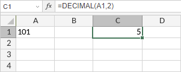

DECIMAL funkcija
Funkcija DECIMAL je jedna od matematičkih i trigonometrijskih funkcija. Koristi se za konverziju tekstualnog prikaza broja u određenoj bazi u decimalni broj.
Sintaksa
DECIMAL(text, radix)
Funkcija DECIMAL ima sledeće argumente:
| Argument | Opis |
|---|---|
| text | Tekstualni prikaz broja koji želite da konvertujete. Dužina stringa mora biti manja ili jednaka 255 karaktera. |
| radix | Baza broja. Celi broj veći ili jednak 2 i manji ili jednak 36. |
Napomene
Kako primeniti funkciju DECIMAL.
Primeri
Slika ispod prikazuje rezultat koji vraća funkcija DECIMAL.
